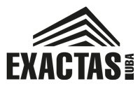

Inteligencia de datos aplicada al desarrollo de jugadores en inferiores. Casos validados en las mejores academias del mundo.
Los clubes europeos líderes invierten fuertemente en data science para sus divisiones inferiores. La ventaja competitiva ya no es solo técnica: es informacional.
La oportunidad: aplicar estas metodologías probadas a nuestras inferiores, adaptadas a la realidad del fútbol argentino.
Cada feature está respaldada por casos de éxito en academias europeas y papers académicos validados.
Tracking de maduración biológica para no descartar talentos tardíos ni sobrecargar a los precoces.
Modelo predictivo basado en carga de entrenamiento para detectar riesgo antes de que ocurra la lesión.
Ir más allá de goles y asistencias con xG, pases progresivos, PPDA y métricas por posición.
Medir inteligencia futbolística: velocidad de decisión, lectura del juego, liderazgo.
Framework holístico de evaluación: técnico, físico, psicológico y social en una sola vista.
Predecir el techo de cada jugador comparando su curva de desarrollo con datos históricos.
Tracking de maduración biológica para evaluar jugadores por desarrollo real, no por edad cronológica.
Un jugador de 14 años que mide 1.80 no es comparable con otro de 14 que mide 1.55. La edad cronológica no refleja la maduración biológica.
Pioneros en torneos bio-banding. Obligatorio en las 4 categorías de academia. 7 estudios validan la reducción de sesgo.
Evaluación en Técnica, Insight, Personalidad, Velocidad. Ajustan expectativas por estado madurativo.
Planes individuales de desarrollo con perfilado de maduración al ingreso a la academia. Caso de estudio Deloitte.
Calcular el Peak Height Velocity (PHV) con la fórmula de Mirwald y trackear el estado madurativo de cada jugador.
Modelo predictivo de riesgo basado en carga de entrenamiento, bienestar y estado madurativo.
El Acute-to-Chronic Workload Ratio compara la carga reciente (7 días) contra la carga habitual (28 días). Picos en este ratio predicen lesiones.
20,913 data points de GPS en 53 jugadores. Paper publicado en MDPI Sports (2018). Encontraron diferencias posicionales significativas.
Estudio en British Journal of Sports Medicine: picos de ACWR >2.0 correlacionan con 5-7x más riesgo de lesión.
Primer torneo juvenil del mundo con tracking de jugadores en tiempo real (2025). Miden carga en vivo durante competencia.
| Dato | Tipo | Quién |
|---|---|---|
| Distancia total (m) | Número | Prep. físico |
| Sprints (count) | Número | Prep. físico |
| Velocidad máxima (km/h) | Número | Prep. físico |
| RPE (1-10) | Escala | Jugador |
| Horas de sueño | Número | Jugador |
| Dolor muscular | Escala | Jugador |
| Tipo de sesión | Enum | Prep. físico |
Carga aguda / carga crónica con alertas de color
Variables: ACWR + historial lesiones + estado PHV + RPE
Paper PMC 2023 valida ML para injury forecasting en youth soccer
Ir más allá de goles y asistencias para capturar la contribución real de cada jugador al juego.
Cada posición necesita métricas específicas. StatsBomb captura 3,400+ eventos por partido. Nosotros arrancamos con las más impactantes.
Carga: ~5 min por jugador post-partido.
El analista completa una planilla simple que se importa al sistema.
Derivados automáticos: % de pases, métricas por 90 min, percentiles por edad y posición, xG simplificado.
Medir la inteligencia futbolística: velocidad de decisión, lectura del juego, liderazgo y resiliencia mental.
El mejor jugador no es siempre el más rápido o el que más goles hace. La inteligencia de juego separa al bueno del top.
Entrenamiento cognitivo desde los 11 años. Datos recopilados 2-3x/año durante 6-7 años. Miden movimientos oculares, percepción, scanning visual.
Arena con proyectores y sensores. Mide reconocimiento cognitivo de situaciones tácticas junto con precisión técnica. 250 jugadores juveniles.
Simulador indoor que combina entrenamiento técnico con evaluación psicológica en las mismas sesiones.
| Dimensión | Escala | Evalúa |
|---|---|---|
| Velocidad de decisión | 1-5 | DT / Psicólogo |
| Lectura de juego | 1-5 | DT |
| Visión / Scanning | 1-5 | DT |
| Liderazgo en cancha | 1-5 | DT |
| Comunicación | 1-5 | DT |
| Resiliencia mental | 1-5 | Psicólogo |
| Actitud en entrenamiento | 1-5 | DT |
| Coachability | 1-5 | DT |
| Presión competitiva | 1-5 | Psicólogo |
| Relación con pares | 1-5 | DT / Psic. |
Validación: SpringerPlus confirma que jugadores >11-12 años son aptos para evaluación cognitiva/táctica formal.
El framework de la Premier League que unifica toda la evaluación en 4 dimensiones: Técnico, Físico, Psicológico y Social.
Obligatorio en las academias de Premier League. Cada jugador tiene un score en cada esquina del diamante.
El módulo académico que ya tenemos se integra naturalmente en la esquina Social.
Predecir el techo de un jugador basándose en su curva de desarrollo comparada con jugadores históricos similares.
Un jugador con rating 60 que sube 15 puntos en 6 meses es más interesante que uno con rating 75 estancado.
Machine learning para evaluar compatibilidad de talento con el estilo del club. 75% de graduados llegan a primera.
33 ligas juveniles, 15,000 jugadores. Algoritmo GDA basado en cadenas de Markov que evalúa cómo cada acción cambia la probabilidad de gol.
Ratings de calidad y potencial para 250,000+ jugadores. Monitoreo desde Sub-13 en la liga holandesa.
Rating promedio por edad y posición. Comparar jugador real vs curva esperada.
"Ahead of curve" / "On track" / "Behind curve" según velocidad de mejora.
Probabilidad de subir de división basada en tendencia, no solo rating actual.
K-means para detectar arquetipos. Modelo supervisado con jugadores que llegaron a Primera como target.
Todo el sistema depende de la calidad y consistencia de los datos. Acá está el mapa completo por frecuencia.
| Frecuencia | Datos | Responsable | Tiempo |
|---|---|---|---|
| Diario | Sueño, dolor muscular, RPE post-sesión | Jugador (auto-reporte) | 1 min/jugador |
| Por partido | Eventos de partido (goles, pases, duelos, etc.) | Analista / DT | 5-15 min |
| Por sesión | Carga física (distancia, sprints, vel. máx) | Preparador físico | 5 min |
| Mensual | Antropometría (altura, peso), asistencia escolar | Médico / Admin | 10 min/jugador |
| Trimestral | Evaluación cognitiva (10 dimensiones), Four Corner completo | DT / Psicólogo | 15 min/jugador |
| Por evento | Lesiones (tipo, zona, severidad, mecanismo) | Médico / Kinesiólogo | 5 min/evento |
| Una vez | Fecha de nacimiento, altura de padres, pierna hábil | Admin | 3 min/jugador |
| Club | Feature | Fuente |
|---|---|---|
| Ajax | ML + TIPS framework | ajaxdaily.com |
| Bayern Munich | skills.lab Arena | fcbayern.com |
| Chelsea FC | GPS tracking (paper) | MDPI Sports |
| Dortmund | Cognitivo desde 11 años | skysports.com |
| Benfica | 360S Lab + planes indiv. | Deloitte |
| Man City/CFG | Hub central multi-club | the-footballanalyst |
| RB Salzburg | Scouting data-driven | the-footballanalyst |
Metodologías probadas en las mejores academias del mundo, adaptadas a nuestra realidad y listas para implementar de forma progresiva.
No perder talentos tardíos por juzgarlos con la vara equivocada
Detectar riesgo de lesión antes de que ocurra con ACWR
Capturar contribución real al juego, no solo goles
Medir inteligencia futbolística, no solo capacidad física
Visión integral del jugador en una sola vista
Predecir qué jugadores van a llegar a Primera
